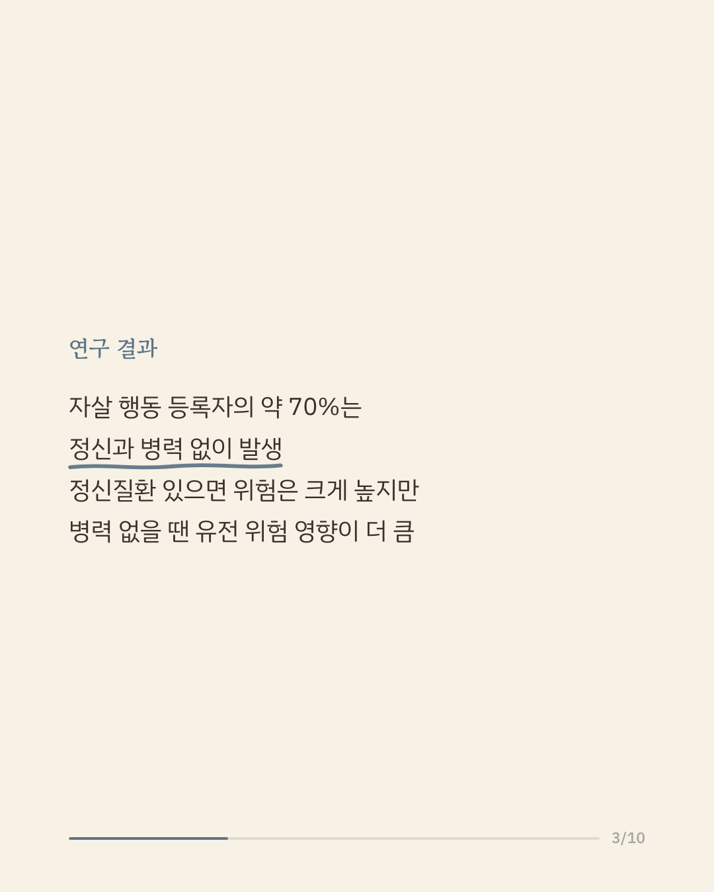
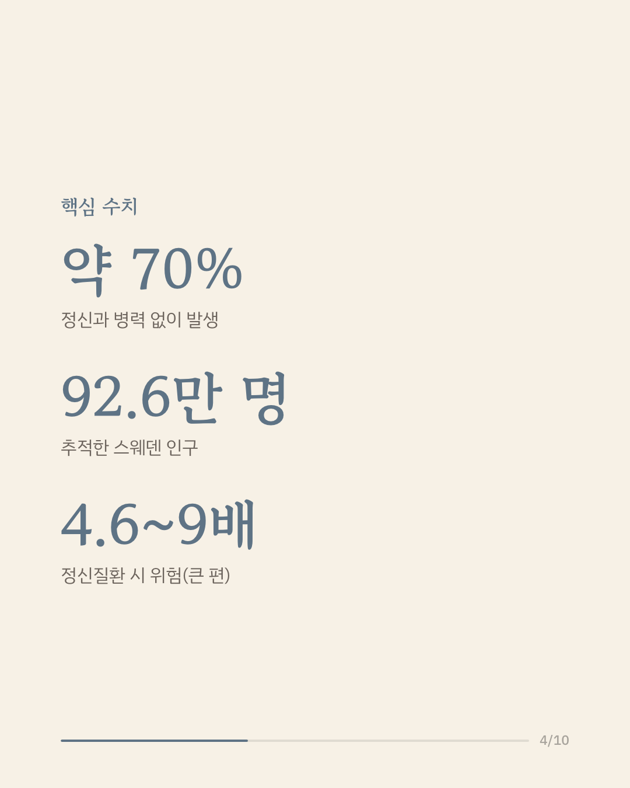
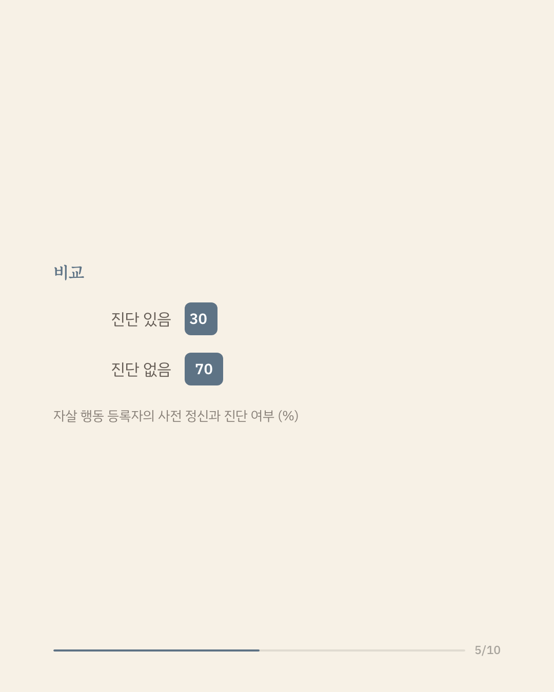

자살 행동은 흔히 우울증이나 불안 장애 같은 정신질환과 함께 나타나는 것으로 알려져 있습니다. 그러나 정신과 진료 이력이 없는 상태에서 일어나는 자살 행동에 대해서는 밝혀진 바가 적습니다. 스웨덴 연구진은 1980~1990년에 태어난 국민 92만 6천여 명의 국가 등록 자료를 이용해, 가족력에 기반한 유전 위험 점수와 정신질환 진단 이력이 자살 행동과 어떻게 관련되는지 분석했습니다. 자살 행동으로 등록된 사람 가운데 사전에 정신과 진단을 받은 경우는 약 30%에 그쳤고, 나머지 약 70%는 정신과 병력 없이 자살 행동이 나타났습니다. 정신질환이 있는 경우 자살 행동의 위험은 뚜렷하게 높았지만, 정신과 병력이 없는 사람에게서는 유전적 위험 요인의 영향이 상대적으로 더 크게 나타났습니다. 이 결과는 자살 예방을 위한 선별과 개입이 정신과 진료를 받는 사람뿐 아니라 그 바깥의 인구까지 넓어질 필요가 있음을 시사합니다. 다만 이 연구는 국가 등록 자료에 기반해 미등록되거나 경미한 사례가 빠졌을 수 있고, 스웨덴 인구를 대상으로 한 관찰 연구입니다. 단일 연구이므로 확대 해석은 조심해야 합니다. 출처: Acta Psychiatrica Scandinavica (2026), 'Leveraging Family Genetic Risk Scores to Understand the Etiology of Suicidal Behaviors and Their Associations With Psychiatric Disorders' 힘든 마음이 들 때는 자살예방상담전화 109, 정신건강상담전화 1577-0199에서 도움을 받을 수 있습니다. #자살예방 #정신건강정보 #임상심리 #심리학연구 #논문리뷰
python3 publish.py 42320979